GALERIJA
 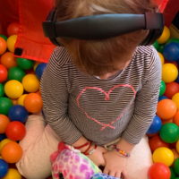
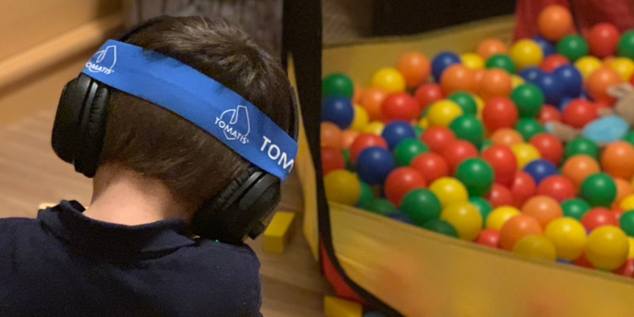
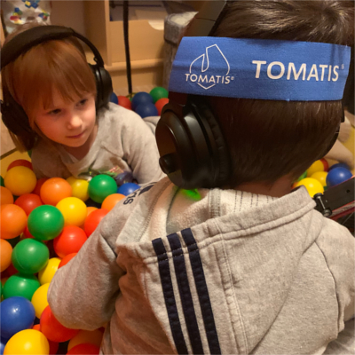
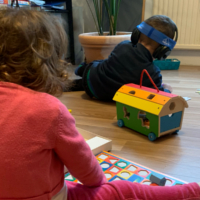
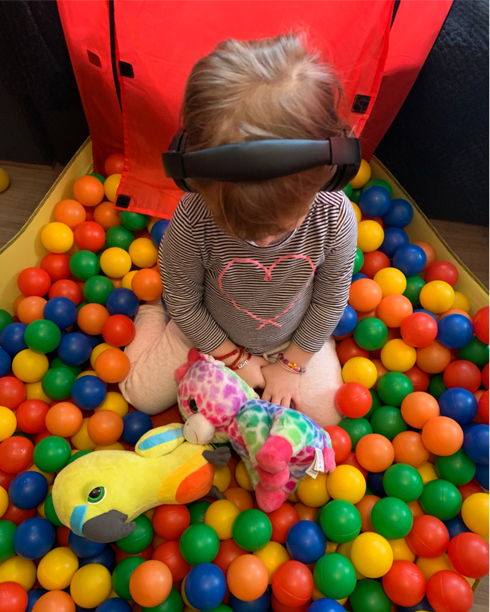
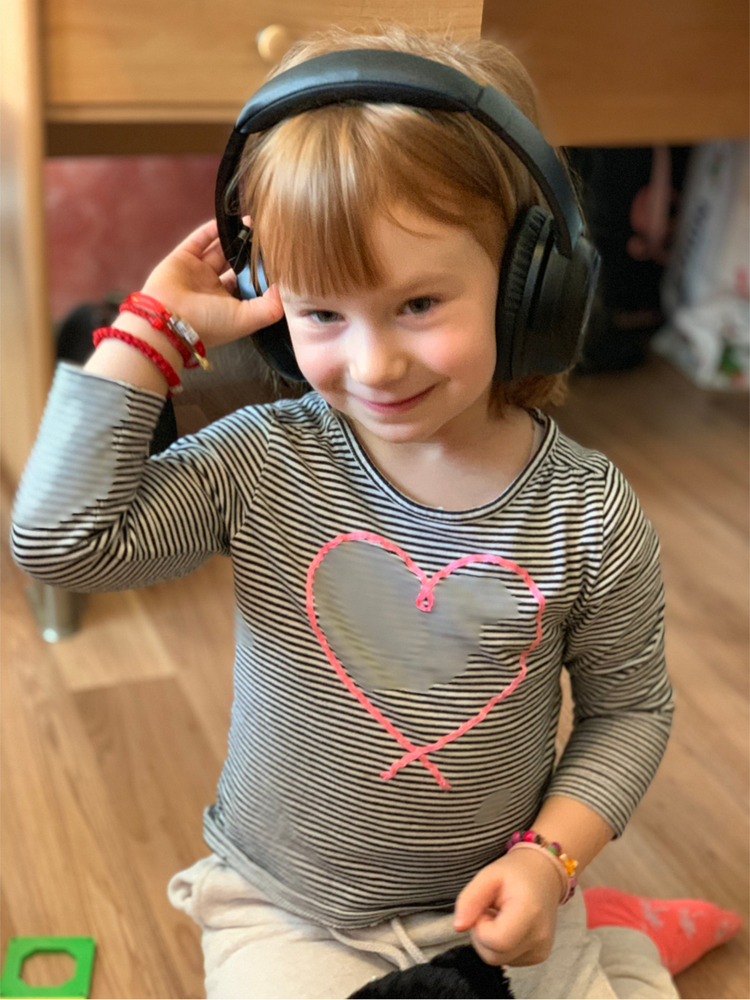
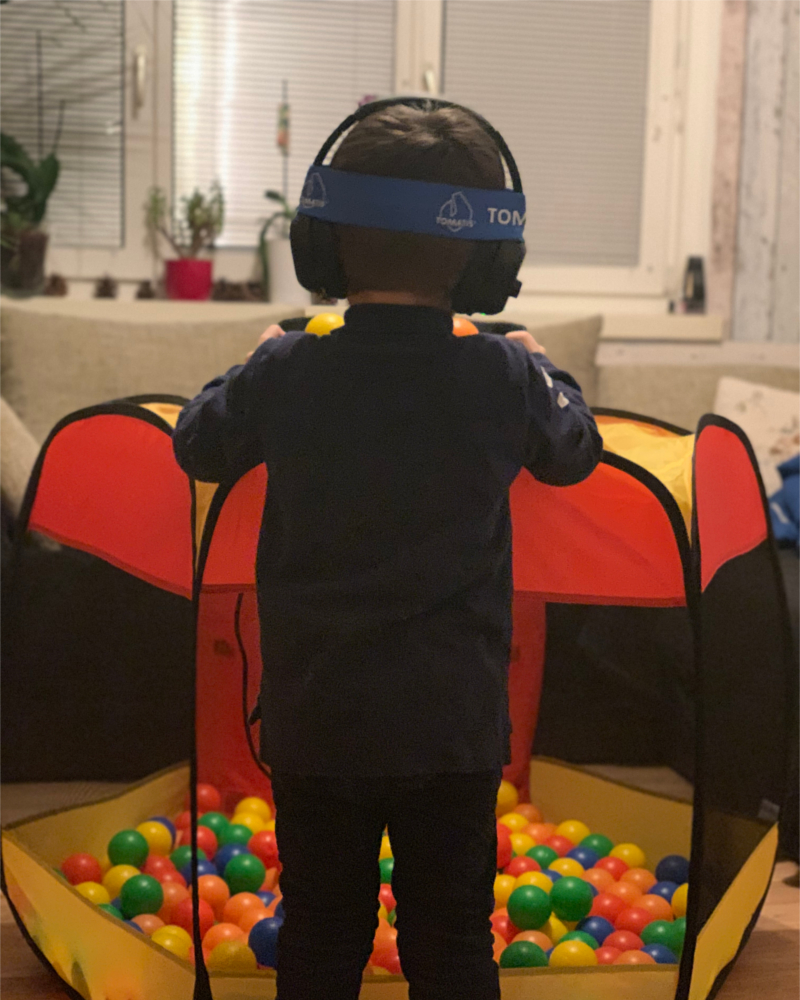
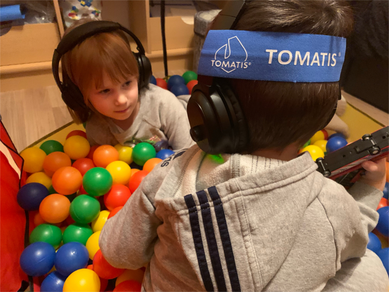
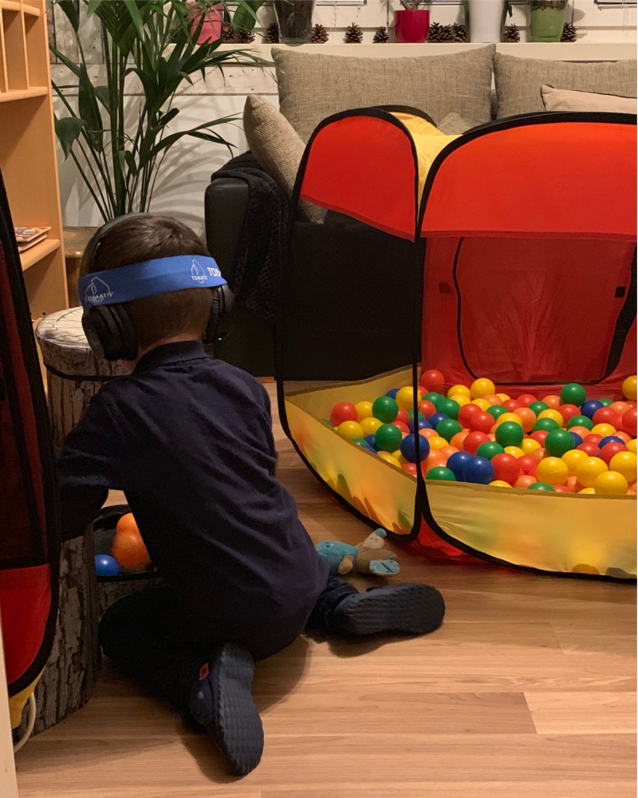
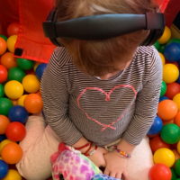
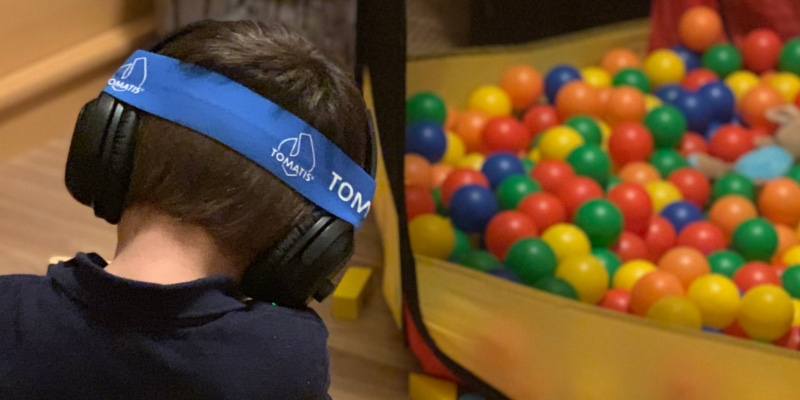
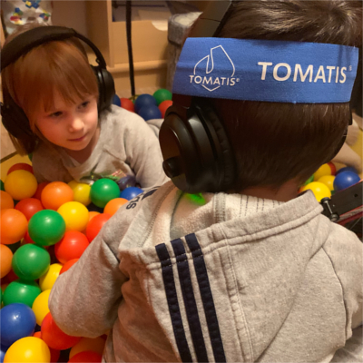
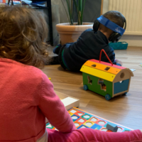
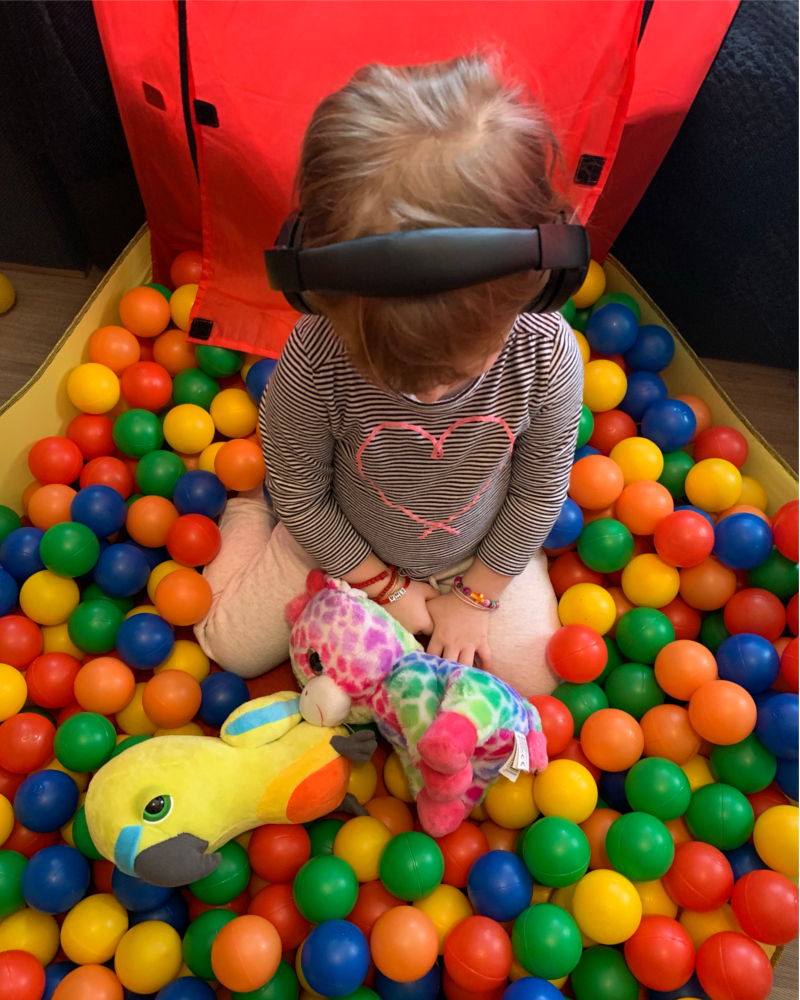
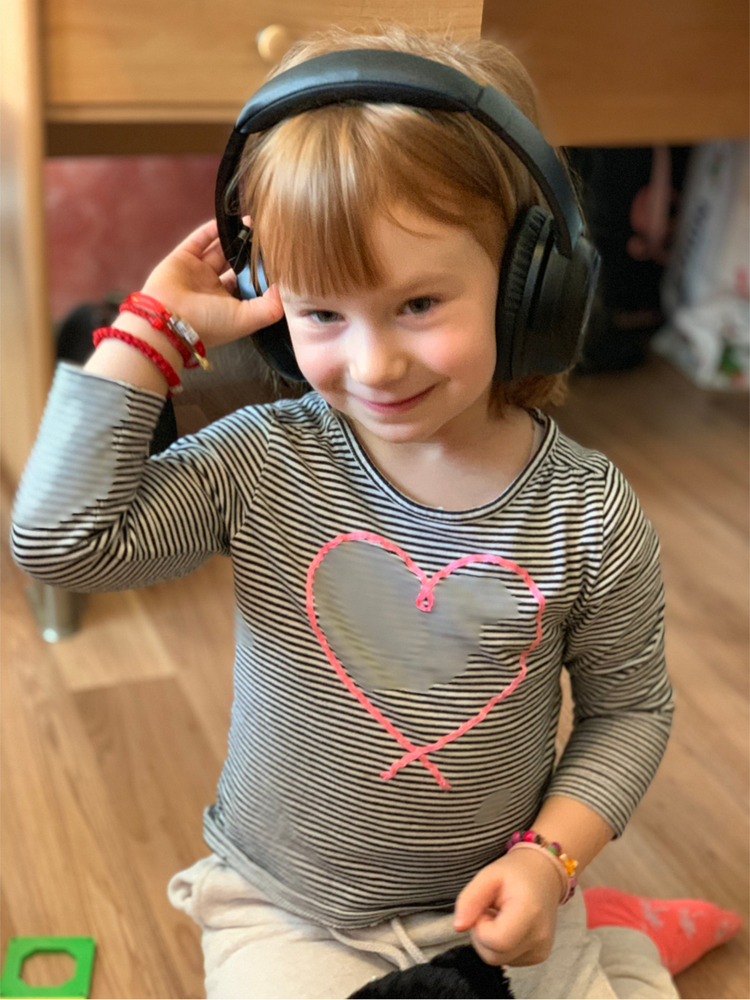
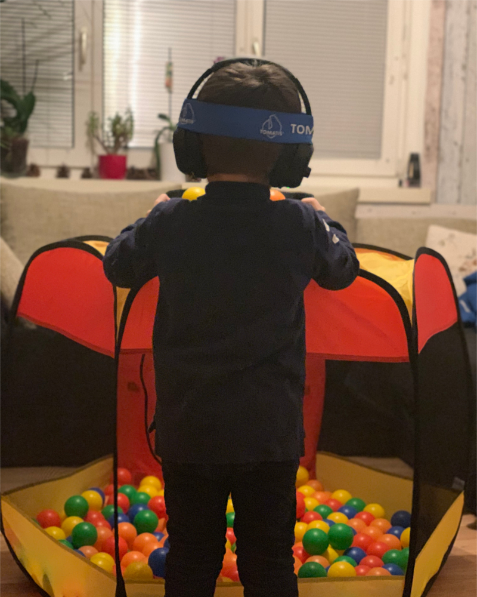
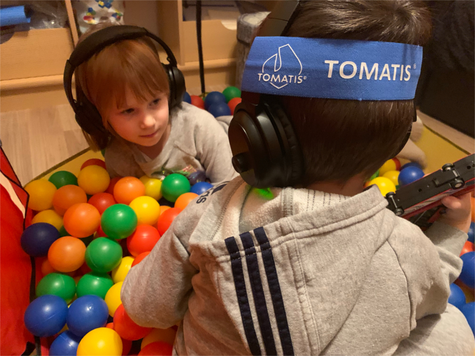
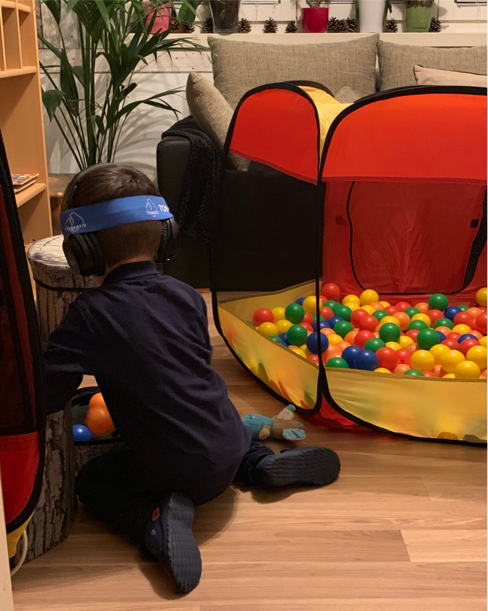
Tomatis®.
Tomatis® metoda je sistem za treniranje slušanja koju je kreirao Dr Alfred Tomatis. Godine 1950. konstruisao je prvi aparat u tu svrhu.
Pronalazač i osnivač metode je Alfred Tomatis. Tomatis je završio medicinske studije i specijalizirao ORL. Dugo je radio u Parizu kao specijalista za glas. Pošto je i sam bio sin operskog pevača, brzo je uočio problem pevača u odnosu slušanje-glas. Dok je lečio pevača specifičnog stanja sproveo je audiogram test. Iako je ranije primetio traumu kod ljudi sa vokalnim alternacijama, bio je zapanjen sličnošću između vokalnih problema pacijenta i alternacija u njegovom sluhu. Njegov glas nije mogao da proizvede frekvencije koje je njegovo uho samo blago primalo. Odlučio je da ispravi pevačevu mogućnost slušanja kako bi proverio da li je na ovaj način moguće otkloniti problem sa glasom. Zahvaljujući akustičnom aparatu, koji ima mehanizam da selektuje različite nivoe frekvencija uspeo je da ispravi slušanje svog pacijenta, koji je bio stimulisan da peva dok sluša svoj glas. Bez napora, pacijent je mogao da emituje tonove koje ranije nije uspevao. Ovo otkriće predstavio je Francuskoj Akademiji Nauka i Akademiji Medicine u Parizu 1957.god. i 1960.god. A ovakav princip lečenja postaće poznat kao Tomatis Efekat.
Slušanje je akcija koja se prekida kada mozak više ne može da se adaptira svom akustičnom okruženju. Slušanju nije ekvivalent čuti. Oštećenja sluha, koja je uočio i Tomatis, mogu biti razna: pogrešno razumevanje ili pogrešno predstavljanje akustične situacije koja sprečava postizanje željenog cilja, nemogućnost mozga da se adaptira svom akustičnom okruženju, emotivna uznemirenost, teškoće u prilagođavanju.
Bilo da smo budni ili da spavamo, naše uho konstantno bombarduje naš mozak stimulusima. Već od četvrtog meseca trudnoće uho fetusa je prvi potpuno funkcionalni organ. Uho nije samo prijemnik zvukova već ono i determiniše ravnotežu, ritam i koordinaciju. Pokušajte da zapušite uši dok hodate i uvidećete da ste značajno izgubili ravnotežu. Kada je slušanje aktivirano, auditorni sistem je uznemiren. Ovo uznemiravanje je jak udarac na personalni razvoj. Funkcionišući na prijemu i integraciji zvuka kroz uho, Tomatis metoda pomaže da stimulišete mozak efektivnije i da umanjite slušne izazove.
Kada je slušanje prekinuto mozak prestaje da reaguje na one zvukove koje uho prenosi. Zbog toga je neophodno usmeriti pažnju i pokrenuti aktivnost mozga. Ovo se dešava kada je mozak vrlo osetljiv na iznenadne promene koje ne može da predvidi. Tokom Tomatis faza slušanja, muzika se prenosi iznenadnim promenama tonskog kontrasta, koji se aktivira promenama boje i intenziteta zvuka. Ovi kontrasti su potpuno neočekivani. Takođe su i bezbolni, a imaju iznenađujući efekat na mozak, pa usled toga obraćamo više pažnje, što je i prirodna reakcija. Kao rezultat ovih ponavljajućih i neočekivanih kontrasta mozak napreduje u pravcu jasnoće slušanja, poboljšavajući sveukupno slušanje. Ovi kontrasti su dizajnirani da unaprede prenos visokofrekventnih zvukova koji aktiviraju veliki broj senzornih ćelija osetljivih na zvuk. Visokofrekventni zvukovi imaju snažan stimulišući efekat na uho i mozak tako što pripremaju auditorni sistem i uho za prijem zvuka veće jasnoće.
Zvuk je vibracija. Ta vibracija se prenosi kroz vazduh (kada putuje kroz uho) i ovaj prenos se naziva vazdušna vodljivost zvuka. Zvuk se, međutim, prenosi i putem kosti; na ovaj način vibracija bolje (brže) putuje kroz kosti našeg tela. Tokom Tomatis faza slušanja, muzika se prenosi koštanom provodljivošću, ali i kroz vazduh kroz specijalno dizajnirane slušalice (sa integrisanim vibratorom koji naleže na teme glave). Muzika stiže do auditivnog kanala kroz slušalice na oba uha (vazdušna provodljivost) i kroz vibrator ( koštana provodljivost). Vibracije deluju na uzengiju i čekić, stimulišući puž i vestibulu. Akcija ovih delova uha stimuliše mozak i njihovim radom se obezbeđuje energija čitavom telu.
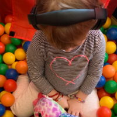
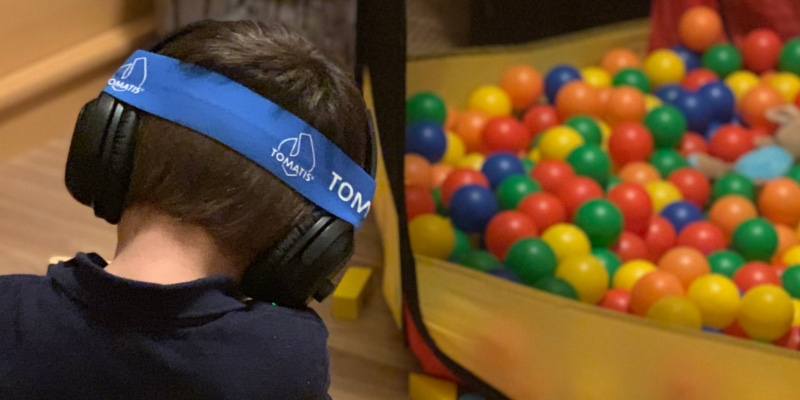
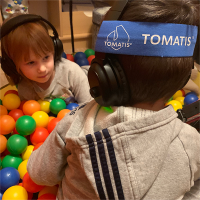
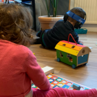
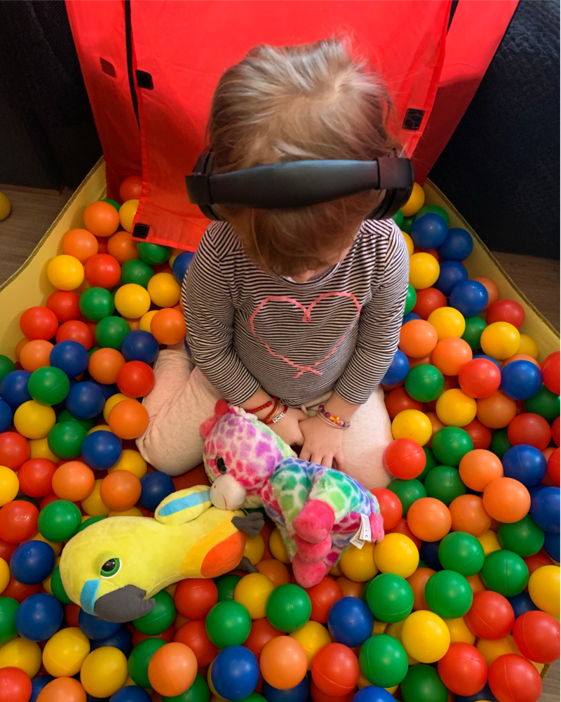
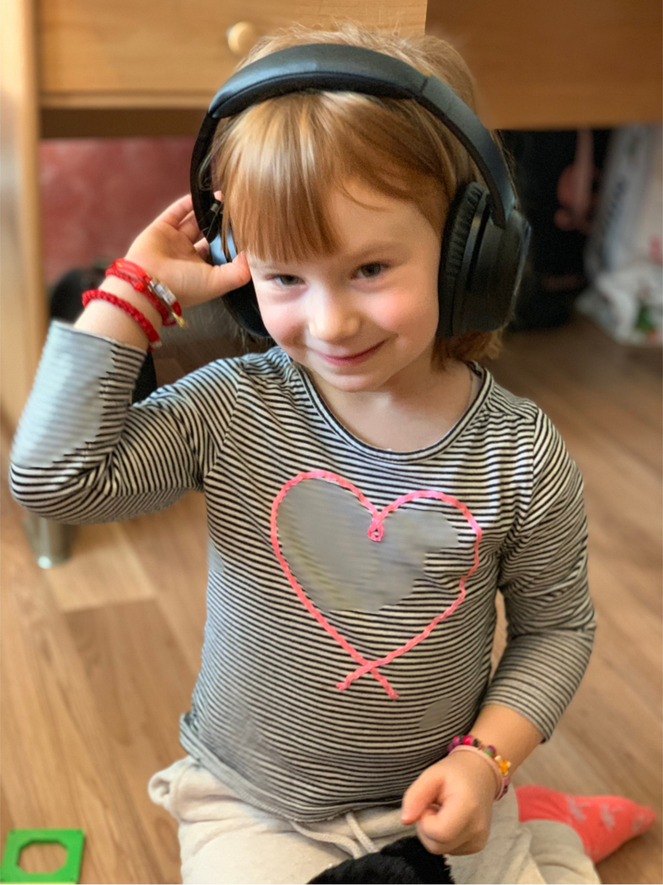
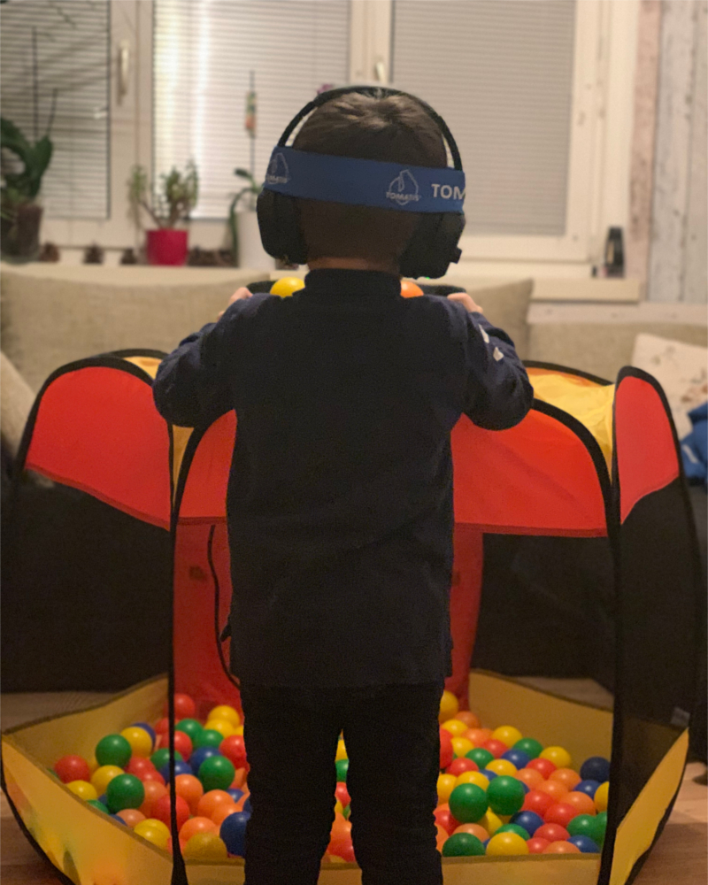
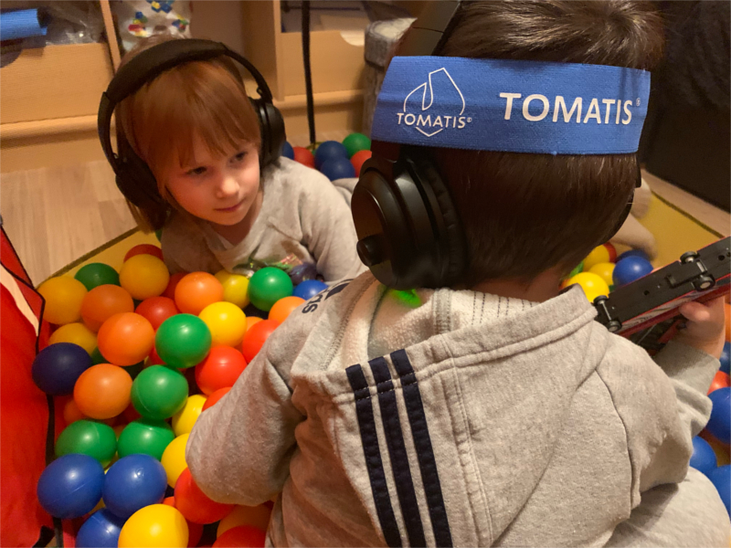
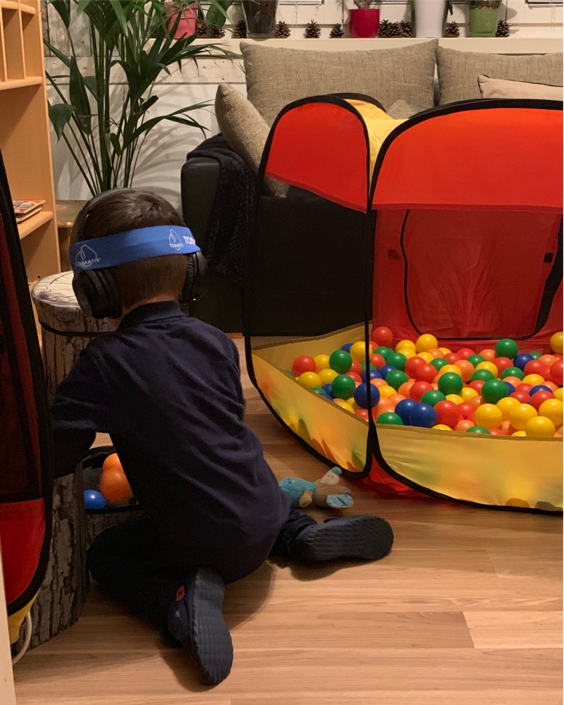